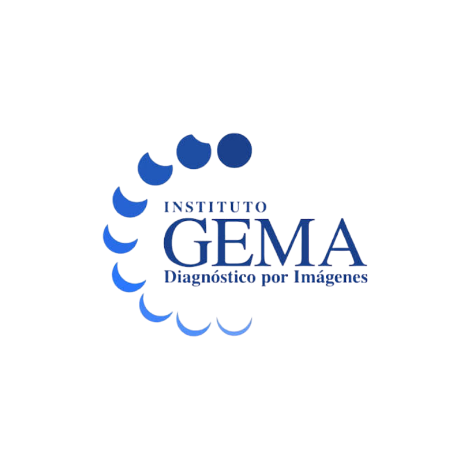
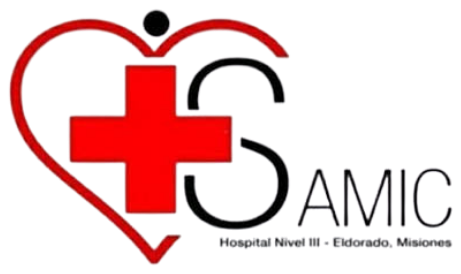
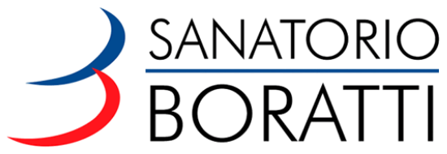
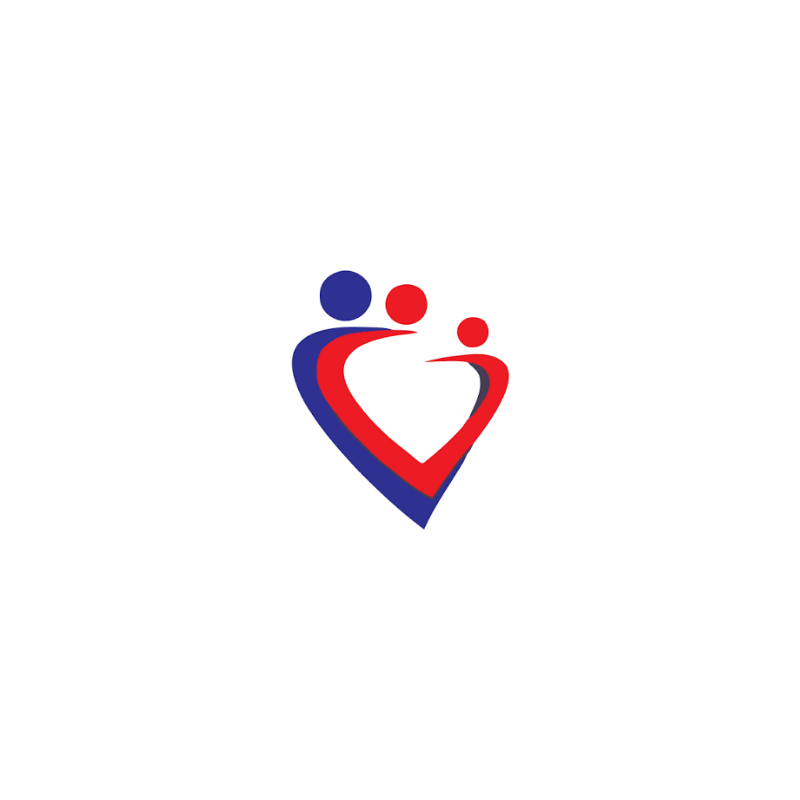

Venta de equipamiento médico, accesorios e insumos, y servicio técnico de ingeniería clínica para sanatorios, clínicas y profesionales de la salud.
Desde la compra del equipo hasta su mantenimiento, con el mismo equipo de ingenieros.
Ecógrafos Mindray y Esaote, y una amplia gama de equipos de distintos fabricantes.
Stock permanente de sensores, cables y accesorios compatibles con las principales marcas de monitores.
Mantenimiento, reparación y gestión del parque tecnológico de su institución.
Vendemos ecógrafos Mindray y Esaote a través de Sonocare, su distribuidor oficial en Argentina. En equipos Mindray somos además el servicio técnico oficial de la región, con repuestos originales, actualizaciones de software y respaldo de fábrica.
Ingeniería biomédica con base local. Respondemos en menos de 24 horas en Misiones, sin costos de traslado de técnicos de otras provincias.
Quien le vende el equipo también lo instala, le provee los insumos y lo mantiene. Un único interlocutor para toda la vida útil del equipamiento.
Cada intervención queda registrada con su informe técnico, lista para habilitaciones, prepagas y auditorías sanitarias.




Cuéntenos qué equipo busca, qué insumo necesita o qué servicio requiere, y le respondemos a la brevedad.